Թեստ 20
30:00
1. «Ճանապարհային երթևեկության անվտանգության ապահովման մասին» ՀՀ օրենքի համաձայն` Հայաստանի Հանրապետության ճանապարհներին սահմանվում է`
2. "Ճանապարհային երթևեկության անվտանգության ապահովման մասին" ՀՀ օրենքի համաձայն՝ B, C, D կարգերի և C1, D1 ենթակարգերի տրանսպորտային միջոցներ վարելու իրավունքի վկայական ունեցող անձանց թույլատրվում է դրանք վարել նաև կցորդներով, եթե կցորդի թույլատրելի առավելագույն զանգվածը չի գերազանցում`
3. Տրանսպորտային միջոցների շահագործումն արգելվում է, եթե`
4. Տրանսպորտային միջոցների շահագործումն արգելվում է, եթե՝
5. Թույլատրվու՞մ է արդյոք տվյալ իրադրությունում կարմիր ավտոմոբիլի վարորդին շարունակել երթևեկությունը:
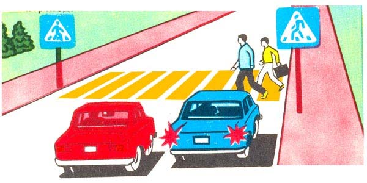
6. Հետևյալ նշաններից ո՞րն է թույլատրում երթևեկել միայն նշված (կմ/ժ) կամ ավելի բարձր արագությամբ:
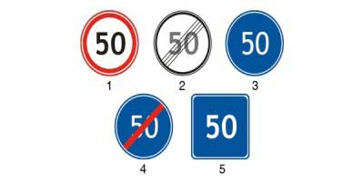
7. Ո՞ ր ուղղությամբ է թույլատրվում թեթև մարդատար ավտոմոբիլի երթևեկությունը:
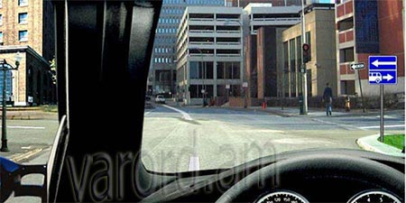
8. Թույլատրվո՞ւմ է հետընթացով մոտենալ ուղևորին
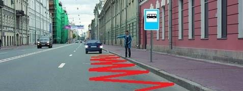
9. Այս նշանները պարտադրում են պահպանել առջևից ընթացողից հեռավորությունը
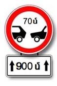
10. Այս իրադրությունում ձախ շրջադարձ կատարելիս վարորդը
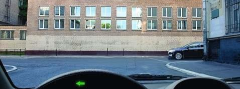
11. Աջ շրջադարձ թույլատրելի է՞ այս իրավիճակում
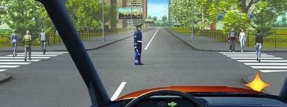
12. Ի՞նչ հերթականությամբ կանցնեն խաչմերուկը տրանսպորտային միջոցները, եթե լուսացույցերը չեն աշխատում՝
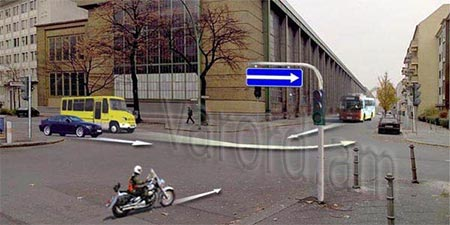
13. Որ տրանսպորտային միջոցներին է թույլատրվում կայանումը:
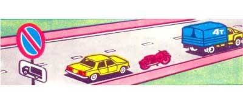
14. Տվյալ նշանի ազդեցության գոտում ո՞ր տրանսպորտային միջոցներին է թույլատրվում կանգառ կատարել:
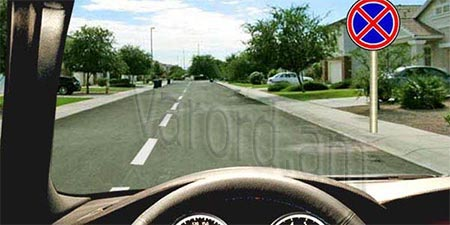
15. Թույլատրվու՞մ է ուղևորների փոխադրումը ավտոբուսի սրահում տվյալ իրավիճակում:
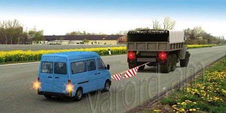
16. Ո՞ր դեպքում է վարորդը խախտել կայանում կատարելու կանոնները
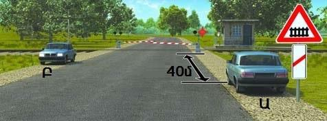
17. Տրանսպորտային միջոցի հետևի եզրաչափից 1.2 մ դուրս ցցված բեռը պետք է արդյո՞ք նշվի օրվա լուսավոր ժամերին «Մեծ եզրաչափերով բեռ» ճանաչման նշանով, իսկ օրվա մութ ժամանակ և անբավարար տեսանելիության պայմաններում, նաև` առջևից սպիտակ, իսկ հետևից` կարմիր գույնի լապտերիկներով կամ լուսանդրադարձիչով
18. Տրանսպորտային միջոցի վրա վթարային լուսային ազդանշանը պետք է միացված լինի`
19. Պարտավոր է արդյո՞ք թեթև մարդատարի վարորդը վերադասավորվել աջ եզրային գոտի վազանց ավարտելուց հետո
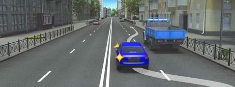